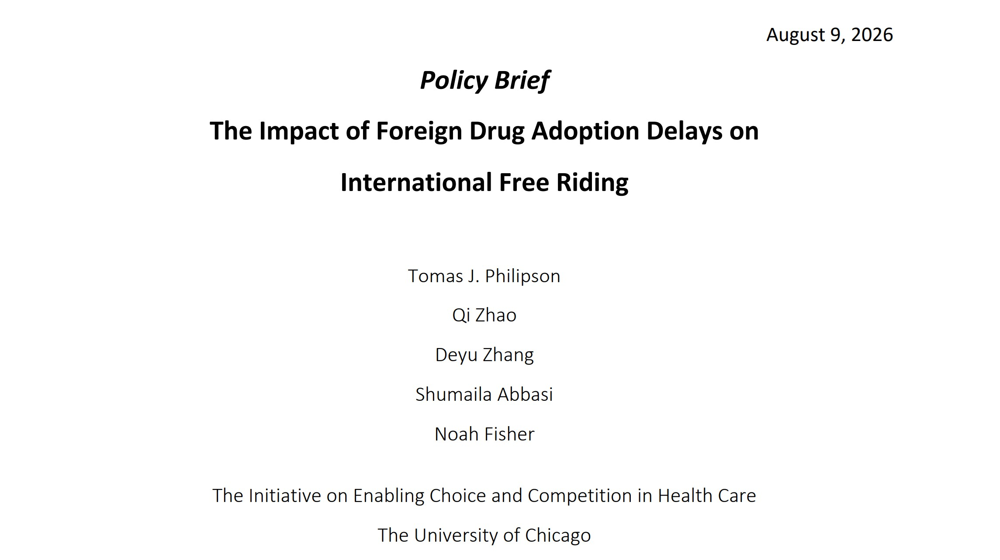
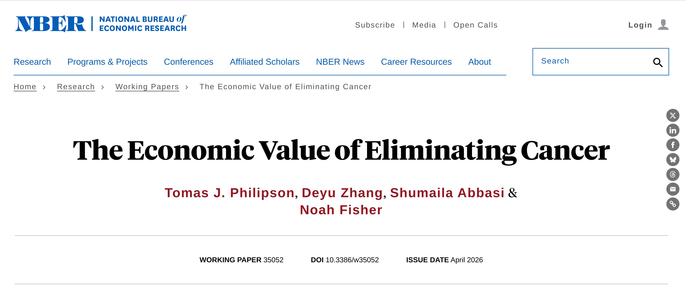
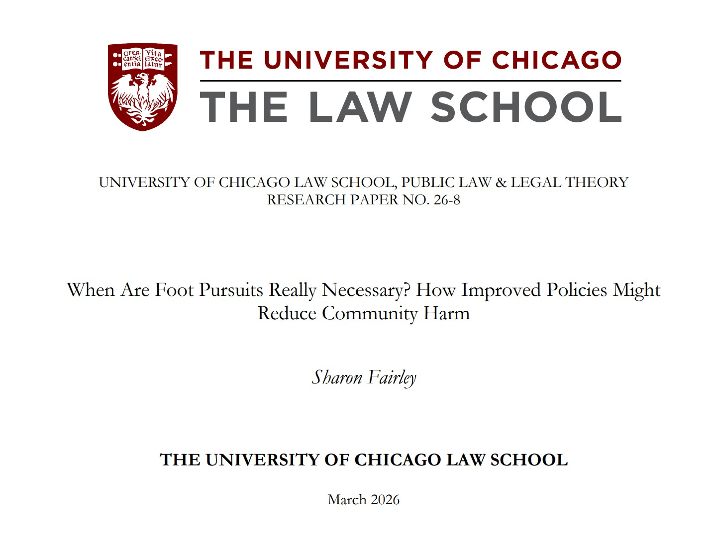
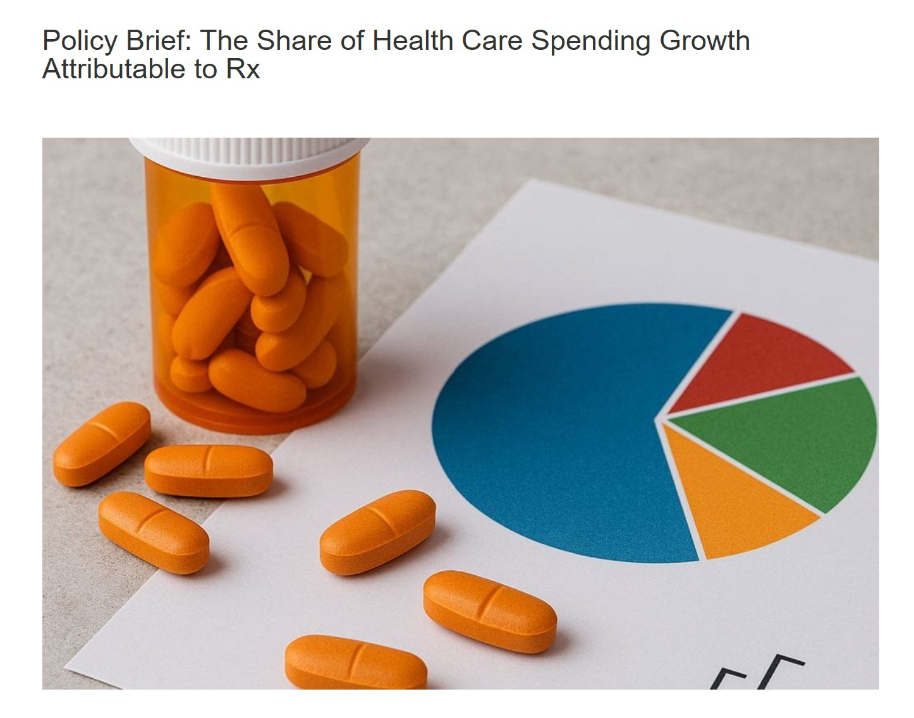
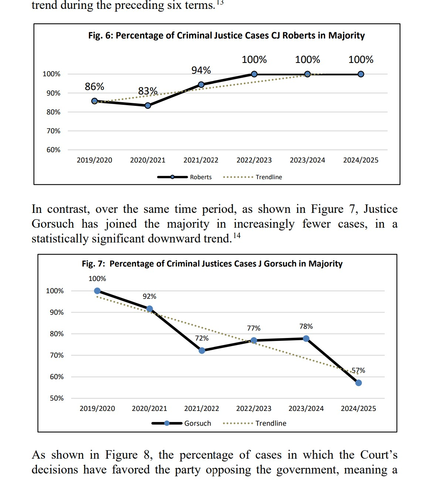
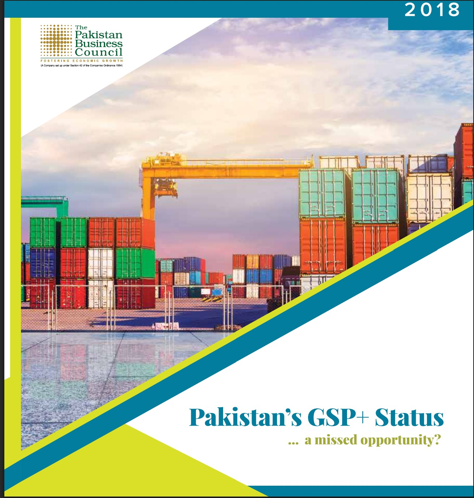
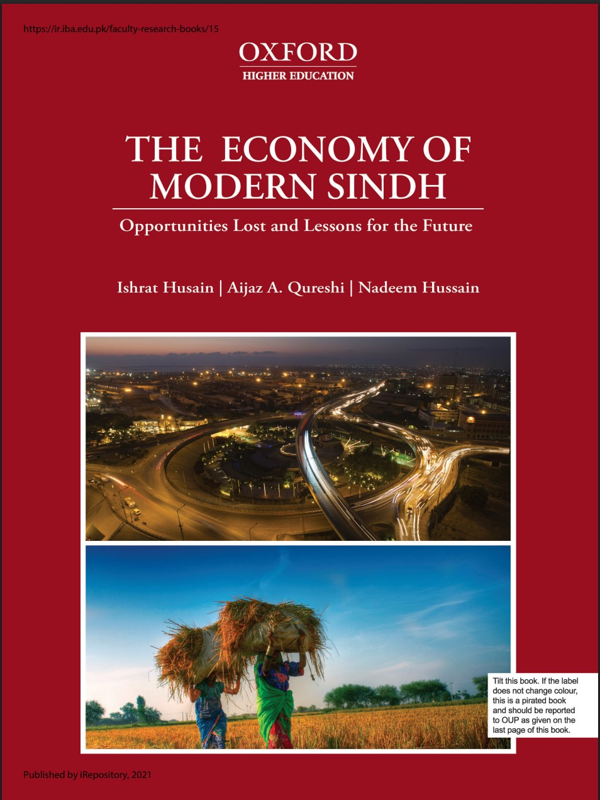
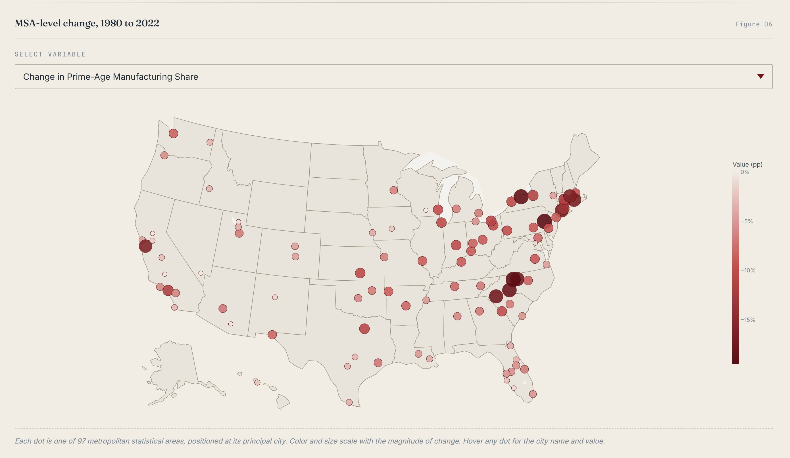
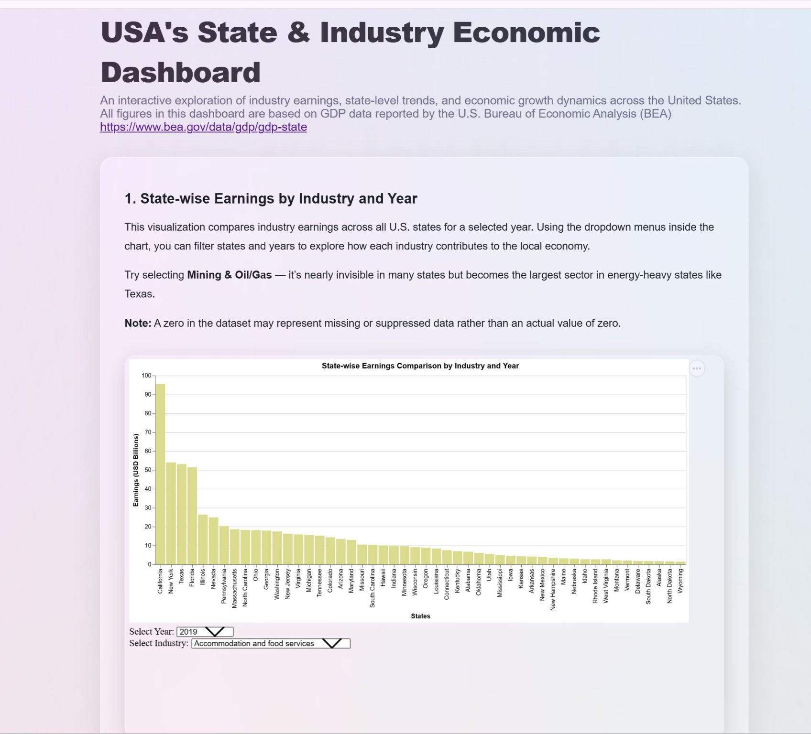

I am a data-driven policy professional at the University of Chicago working at the intersection of computational methods, applied economic research, and public policy. My work focuses on transforming complex data into rigorous, decision-relevant insights.
Download my full academic and professional history as a PDF.
Download CV
Co-authored brief identifying a timing-based channel of international free riding in pharmaceutical markets: later-adopting countries often reimburse new drugs only after U.S. net prices have already declined and competing therapies have entered, letting them contribute less during a drug's most commercially important years.

Co-authored working paper estimating the economic value of eliminating U.S. cancer mortality, translating longevity gains into large-scale social and economic benefits.
Policy brief examining how intellectual property protection shapes post-approval pharmaceutical innovation, additional drug uses, and long-run patient health outcomes.

Research paper analyzing police foot-pursuit policy and how clearer limits and safeguards could reduce community harm while supporting safer law enforcement practices.

Policy brief analyzing the contribution of prescription drugs to long-term U.S. healthcare spending growth.

Supported data management and analysis for Professor Sharon Fairley in this paper analyzing defendant-friendly trends in U.S. Supreme Court criminal justice jurisprudence.
Country profile produced as part of the Central Asia research series for the Pakistan Business Council.
Trade policy framework identifying structural constraints and reform pathways to strengthen Pakistan's knitwear exports.

Policy report evaluating Pakistan's GSP status and its implications for trade competitiveness and export performance.

Research contribution to The Economy of Modern Sindh, led by Dr. Ishrat Husain, supporting sectoral economic analysis and policy-oriented research.

Interactive visual companion to a Becker Friedman Institute working paper, tracing how healthcare overtook manufacturing and retail to become America's largest employer, with linked charts on regional concentration, wage growth, and aging-driven demand across 130 metro areas.

Interactive dashboard built using Altair, HTML, CSS, and JavaScript to analyze state- and industry-level GDP trends in the U.S. from 2019–2024.